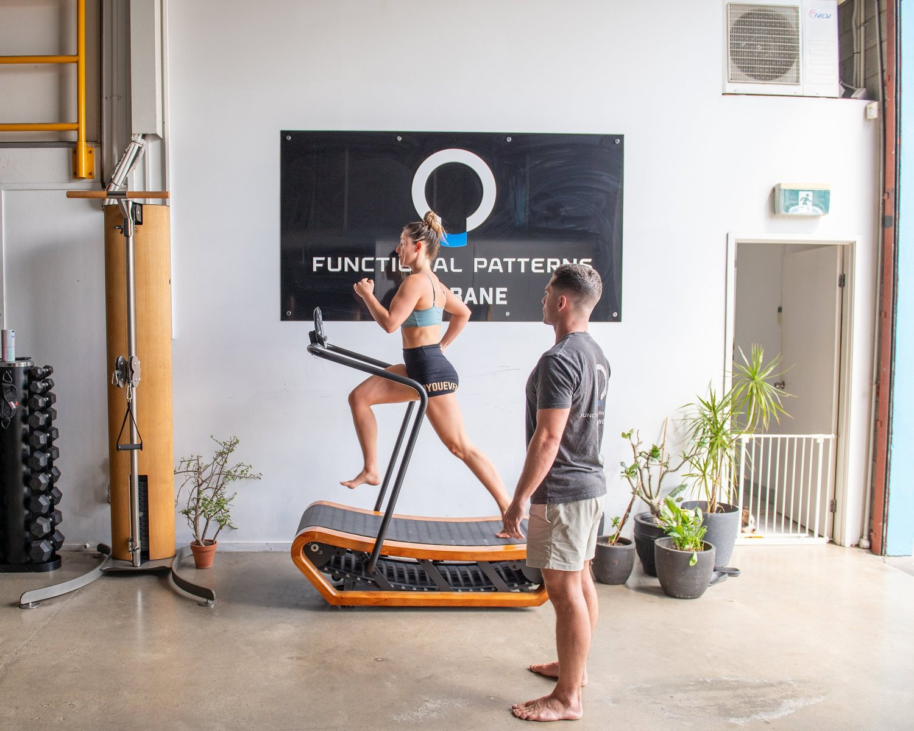

The answer is yes and no.
You can fix scoliosis using very specific, corrective exercise (Functional Patterns.) You most certainly will not fix scoliosis by attending your local gym class, F45/crossfit or PT sessions. If you have done this, please let us know!
So why is it that you require specific exercises to correct a scoliosis?
The main reason is that your body is going to be stronger on one side and weaker on the other. Some muscles are going to be the stars of the show while others quietly atrophy. When you exercise, you are going to use the strong muscles and make them even stronger. This will make the weak muscles even weaker and continue to pull your spine further into a scoliosis.
So what is the solution?
Scoliosis Fixed using Functional Patterns
Getting to Know Gait Analysis:
Gait analysis is a method to understand a person’s body movement and mechanics as they walk. Although it sounds technical, it doesn't have to be. In our practice at Functional Patterns Brisbane, we use a simple slow-motion video capture on our smartphones to get a clear view of how a person moves while walking. This basic setup helps us see how scoliosis may be affecting one's gait and vice versa without the need for expensive equipment or elaborate setups.
What Can Walking Tell Us About Scoliosis?
A lot, actually. When scoliosis changes the way the spine is aligned, it's not just a back issue. It affects how the legs move, how the hips tilt, and how balanced the stride is. So, by looking at how someone with scoliosis walks, we can better understand how their scoliosis might be progressing or affecting other parts of their body.

Why the Way You Walk Matters:
Our bodies are smart. When something's off, like a curve in the spine, the body will try to adjust the way we walk to make movement easier. However, these adjustments might not always be the best thing for us in the long run. They could potentially worsen the spinal curve, setting off a chain reaction of adjustments that could further advance scoliosis. By analysing the gait, we can spot these adjustments.
Finding a Better Path:
With the info we gather from a simple gait analysis, we can work on creating a plan to help the body find better, more natural ways to move. This could be through specific exercises, training, or even making changes in daily activities. Our goal is to help the body get back to a more natural movement pattern, which in turn, could help halt or slow down the progression of scoliosis..
What Exercises Should You Avoid WIth A Scoliosis?
#1 - Back Squats & Deadlifts:
The Load Factor:
Both back squats and deadlifts require the handling of significant loads. This requirement can be problematic for individuals with scoliosis. The asymmetric curvature of the spine associated with scoliosis already presents a challenge in maintaining a neutral and stable spine during such loaded movements. This asymmetric loading can, over time, exaggerate the spinal curvature and lead to further complications.
Biomechanical Discrepancies:
The correct execution of squats and deadlifts demands a symmetrical biomechanical alignment. However, scoliosis inherently disrupts this symmetry, making it almost impossible to maintain a perfect form during these exercises. This misalignment could potentially trigger discomfort, pain, or even injury.
The Risk of Maladaptation:
Our bodies are remarkably adaptive. When presented with a structural irregularity like scoliosis, they tend to adjust movements to accommodate the irregularity. However, these accommodations, or maladaptations, often come at the cost of proper form and alignment, especially when engaging in complex movements like squats and deadlifts. The body may shift more load to one side, further contributing to the asymmetric loading of the spine, aggravating the scoliosis curvature.